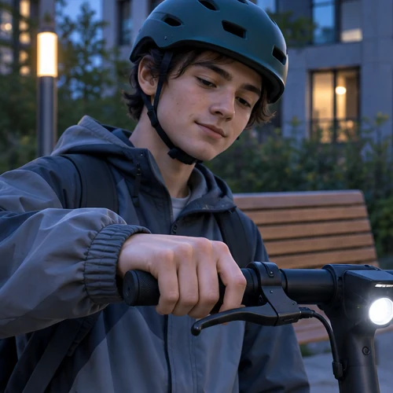
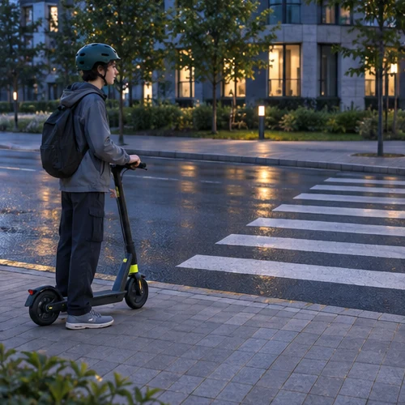
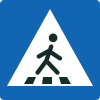
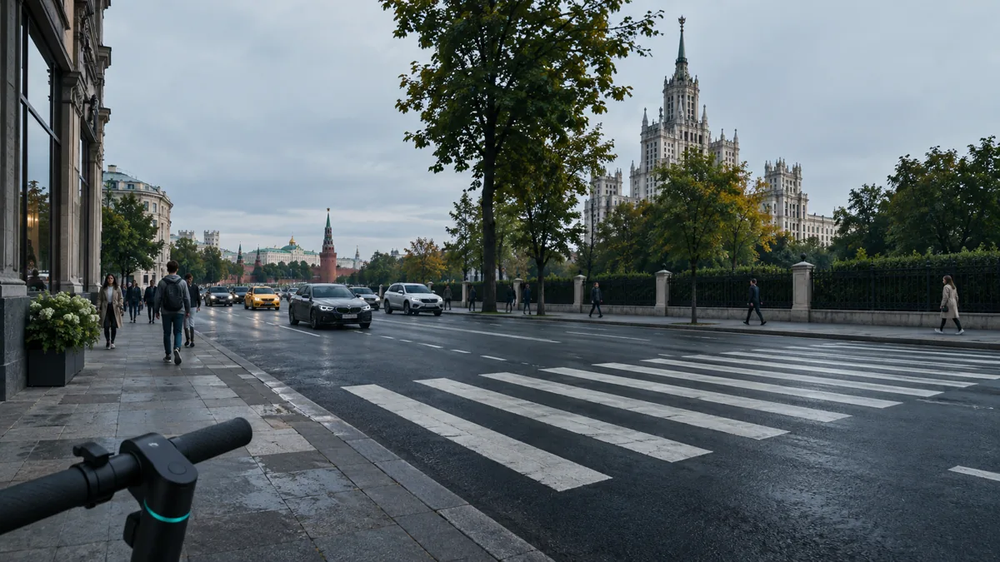
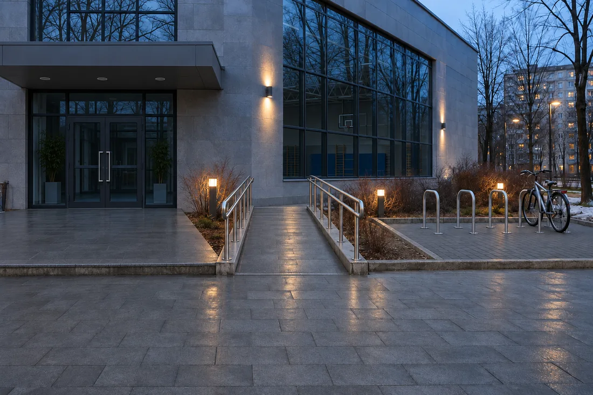

Перед выходом
Ты собираешься на тренировку и готовишь самокат к поездке.

Что стоит сделать перед поездкой?
По тротуару мимо двора
Ты подъезжаешь к арке справа. Сейчас перед тобой свободно, но из-за фургона не видно, что во дворе. Как ты поступишь?
Друг уже на той стороне


Впереди зебра и вот такой знак. Светофора нет. Друг перешёл дорогу и машет тебе рукой.
Как доберёшься до друга?
Можно ли перейти дорогу?

Вы дошли до следующего перекрёстка. Ты ведёшь самокат рядом. По дороге едут машины.
Друг спрашивает: «А нам уже можно?»
Что ответишь другу?
«Подвези до входа»
После перекрёстка вы с другом уже видите спортцентр. До тренировки две минуты. Твой самокат рассчитан на одного.
«Подвезёшь меня до входа? А то пешком я к началу не успею»
Что ответишь?
Где оставить самокат?
Ты у спортцентра. Перед тренировкой осталось припарковать самокат. Выбери место на картинке.


Поздравляем, маршрут пройден!
Теперь ты знаешь, как подготовиться к поездке и безопаснее ездить на самокате.